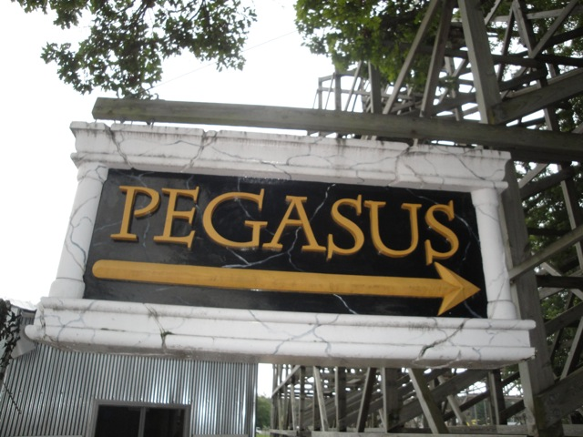

| |
Pegasus Review

Today at Mt. Olympus, we'll be reviewing Pegasus. This is the park's kiddy woodie. After getting in the seats and pulling down the lap bars, we're off. We roll around a small little drop/turn and head straight up the lifthill. The lifthill is so small that we barely spend any time on it at all. After getting a glimpse of the Wisconson Roads, we head down a small first drop. We don't get much speed, but we do get some roughness and shuffling. We get some uncomfortable laterals at the bottom of the hill before rising up into a small hill. Theres no airtime and we aren't going very fast, but there is a lot of jackhammering as this is a rough ride. We go through a tight turn and get more bad laterals before rising up another small hill, where we lose the little speed that we had before. We go through a few tiny dips and turns. The dips are slow and the turns are boring. But hey. At least its not rough anymore. We just go through more lame dips and turns, sure that whoever designed this ride couldn't design a decent coaster to save his/her life. Then we go through a small drop and gain some more speed. We then go through quite a few small hills. I refuse to call them airtime hills due to the lack of airtime, but jackhammering hills would be a good name. And after those hills, we just literally brake into the station. Thats the ride. And man, this ride is a peice of sh*t. Its stupid, the layout makes no sense, and its kind of rough. Now its not god awful in roughness as there are much much more painful rides out there. Hell, Hades and Zeus, both right in Mt. Olympus, are much rougher than Pegasus. But at least with Hades, its rough as hell, but at least it does something. Its fast, agressive, and has some really cool tunnels. Pegasus, while not nearly as rough, has no thrills, even by kiddy wooden coaster standards, and a stupid layout. Yeah. Just get the credit.
1/10
Location: Mt. Olympus
Opened: 1996
Built by: Custom Coasters
Last Ridden: August 14, 2010
Pegasus Photos
|